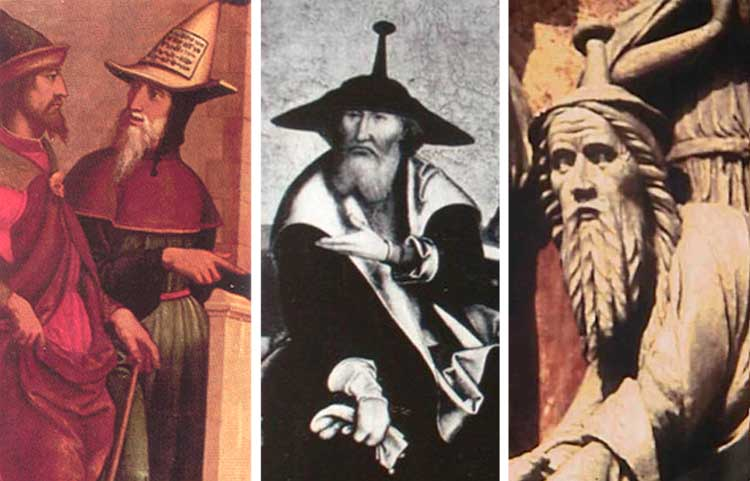

Kinderfresser - ПОЖИРАТЕЛЬ ДЕТЕЙ
Во многих странах веками существовали персонажи, которыми принято было пугать детей, когда те не слушались. Kinderfresser (нем.: Пожиратель детей) - один из таких персонажей. /вместо эпиграфа/
Автор: Эфраим Калиш /фото автора/ Один из исторических кварталов Берна
Один из исторических кварталов Берна
Однажды, в первый наш приезд в Швецарию, нам случилось прогуливаться по Берну в сопровождении нашей приятельницы Урсулы. Уютный городок - столица нейтральной Швейцарии. Мы были немного убаюканы его скромной, тихой красотой.
 Pfeiferbrunnen (фонтан Волынщик) 1546г. скульптор Hans Gieng, (с гравюры Альбрехта Дюрера). Spitalgasse. Берн
Pfeiferbrunnen (фонтан Волынщик) 1546г. скульптор Hans Gieng, (с гравюры Альбрехта Дюрера). Spitalgasse. Берн
Признаться, внимание мое слегка притупилось от обилия увиденного и я слушал рассказ Урсулы в пол уха. Но на Корнплатц (одна из центральных площадей Берна) ко мне вдруг вернулась моя бодрость, когда я услышал слова "она была желтого цвета". Слова эти были сказаны о фигуре, коей был украшен один из многочисленных фонтанов Берна. Я попросил повторить. "Изначально шапка этого господина была выкрашена в желтый цвет", - застенчиво повторила Урсула, - «и создан он в 1546г. Хансом Гиенгом».
Очень интересно. Остроконечный колпак желтого цвета. Хм-м. Это такой же узнаваемый знак, каким позже стала желтая нашивка в виде шестиконечной звезды Давида. По ней, как и по островерхой шапке (чаще всего желтой) прохожий уведомлялся, что ее владелец - еврей.
Kinderfresser – старейший и самый известный из фонтанов Берна 
 Simsonbrunnen (фонтан Самсон) 1544г. скульптор Hans Gieng. Фонтан построен на пожертвования гильдии мясников. Kramgasse. Берн
Simsonbrunnen (фонтан Самсон) 1544г. скульптор Hans Gieng. Фонтан построен на пожертвования гильдии мясников. Kramgasse. Берн
Фонтанов питьевой воды в старом городе довольно много. В центре каждого устанавлена колонна, украшенная какой нибудь фигурой. Это может быть библейский персонаж, национальный герой Швейцарии, какой-нибудь рыцарь бургомистр, или представитель гильдии ремесленников. Kinderfresser – старейший (16-го века) и самый известный из всех фонтанов Берна.
Когда в христианской Европе город украшают библейскими персонажами – это вполне понятно. Понятно также и желание бюргеров прославить свое сословие, или своих предводителей. Но что делает в центре Берна Сатурн?
Kinderfresser (фонтан Пожиратель детей) 1546г. скульптор Hans Gieng. Kornhausplatz. Берн 

Даже на пестром фоне персонажей украшавших собой поильни, Kinderfresser выделяется своей экстравагантностью. Есть различные толкования смысла этой фигуры: от первой приходящей на ум ассоциации с Кроносом (Сатурном), поедающим своих детей, до образа швейцарского правительства, посылающего сыновей Швейцарии на бойню, в качестве платных наемников. Все это наверное справедливо, если не принимать во внимание уже отмеченную Урсулой деталь. Наш герой одет в характерную островерхую еврейскую шапку. И доподлинно известно, что изначально шапка была желтого цвета. Этот цвет был обязательным отличительным знаком одежды евреев средневековой Европы.
Kinderfresser (фонтан Пожиратель детей) 1546г. скульптор Hans Gieng. Kornhausplatz. Берн 

И еще одна отличительная деталь – коринфская капитель, на которой восседает киндерфрессер, украшена козлиными головами. Этот атрибут сопровождает изображения евреев в Европе на стенах и витражах соборов, а также на страницах манускриптов. Во многих случаях, когда изображалась аллегория униженной Синагоги, противопоставленная воинствующей и побеждающей аллегории Церкви, эта самая Синагога изображалась вместе с козлиной головой.
Одежда евреев Франции в средневековье. Характерные признаки: желтый цвет, островерхая шапка 
Именно желтая островерхая шапка расставила для меня все на свои места. Этот признак специально служил знаком различия, обязательным для ношения евреями (их к тому принуждал королевский указ). Нет лучшего персонажа для запугивания, в "воспитательных" целях, детей, как ненавистный еврей с его извечной «потребностью» выпекать мацу с добавлением свежей крови христианских младенцев. Помните, в СССР детей пугали дядей милиционером. Пожиратель детей – это куда круче. Прогуглив тему, вы найдете средневековых христианских писателей, всерьез выводивших наличие у иудеев злобных и вредных качеств из характера их бога Сатурна. В них де, течет та же черная кровь и душа их черна, как их кровь.
 1. Ритуальное убийство иудеями христ. мальчика (манускрипт). 2. Сатурн (в еврейской шапке), пожирающий детей. Peter Wagner's Almanac 1492
1. Ритуальное убийство иудеями христ. мальчика (манускрипт). 2. Сатурн (в еврейской шапке), пожирающий детей. Peter Wagner's Almanac 1492

Современное прочтение старой темы. Образец антисемитской пропаганды
Персонаж Kinderfresser появился на улице Берна не случайно. Он был, так сказать, местным героем. Его прототипом явился некий еврей, живший в 13-том веке. Летописец сообщает о ритуальном убийтсве евреями и мученической смерти христианского мальчика в Берне 1288г. В последствие выяснилось, что это был очередной кровавый навет, но это уже никому не было интересно. Объяснялось все очень просто:
Желая улучшить свое материальное положение, бернские мещане задумали освободиться от своих обязательств перед еврейскими кредиторами. Поводом для погромов и изгнания евреев в 1294 г. послужило ложное обвинение в ритуальном убийстве христианского мальчика Рудольфа евреем Иоелем. Вместе с последним пострадали все евреи Берна: одни погибли мученической смертью, остальные были изгнаны из города.
С тех пор бывали времена, когда единственный в Берне еврей, который не был изгнан, или убит – был тот самый пожиратель детей на центральной площади Берна.
Сегодня шапку на Киндерфрессере перекрасили в зеленый, чтобы не возникали нежелательные ассоциации. Все таки просвещённая, либеральная, демократическая Европа. Но, как говорится, слов из песни не выкинешь. И по сей день мой соплеменник в образе Сатурна «украшает» собой старейший фонтан Берна. И по сей день его венчает еврейский островерхий колпак, пусть и перекрашенный в другой цвет.
Здесь вы можете увидеть замечательный город Берн моими глазами: